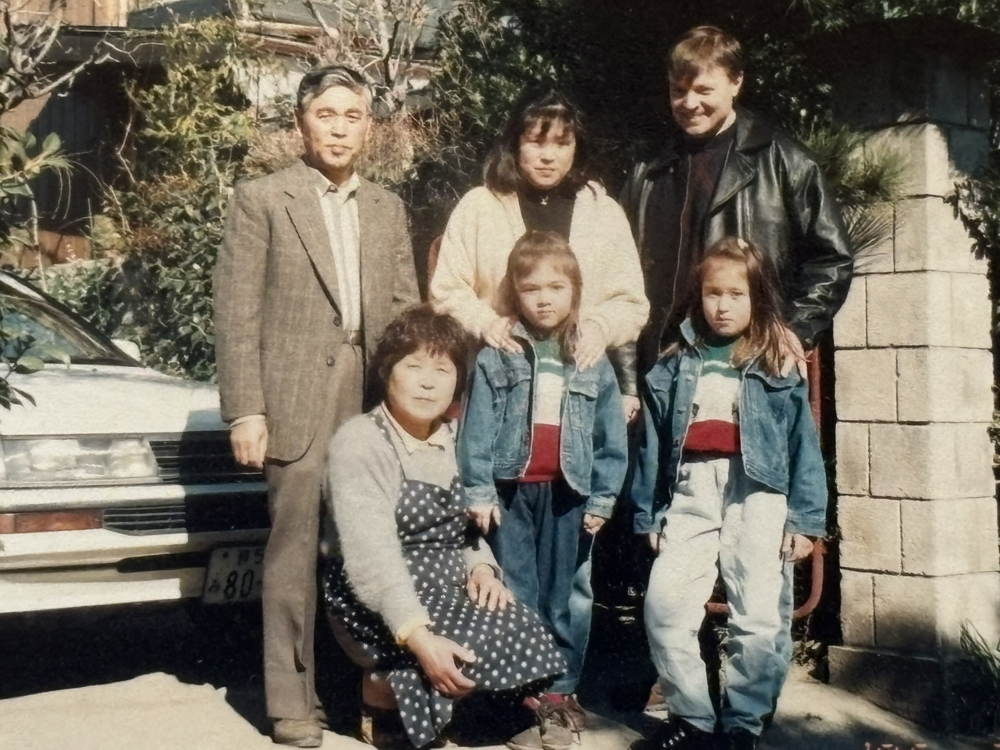
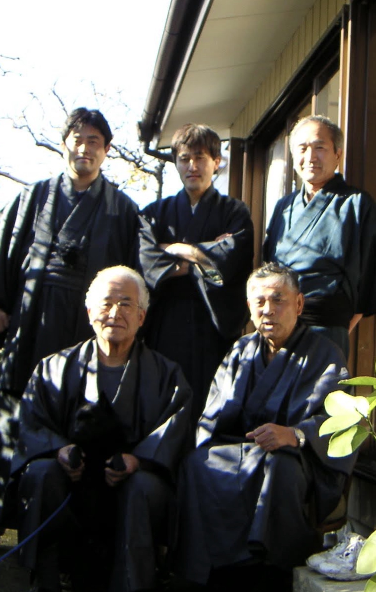
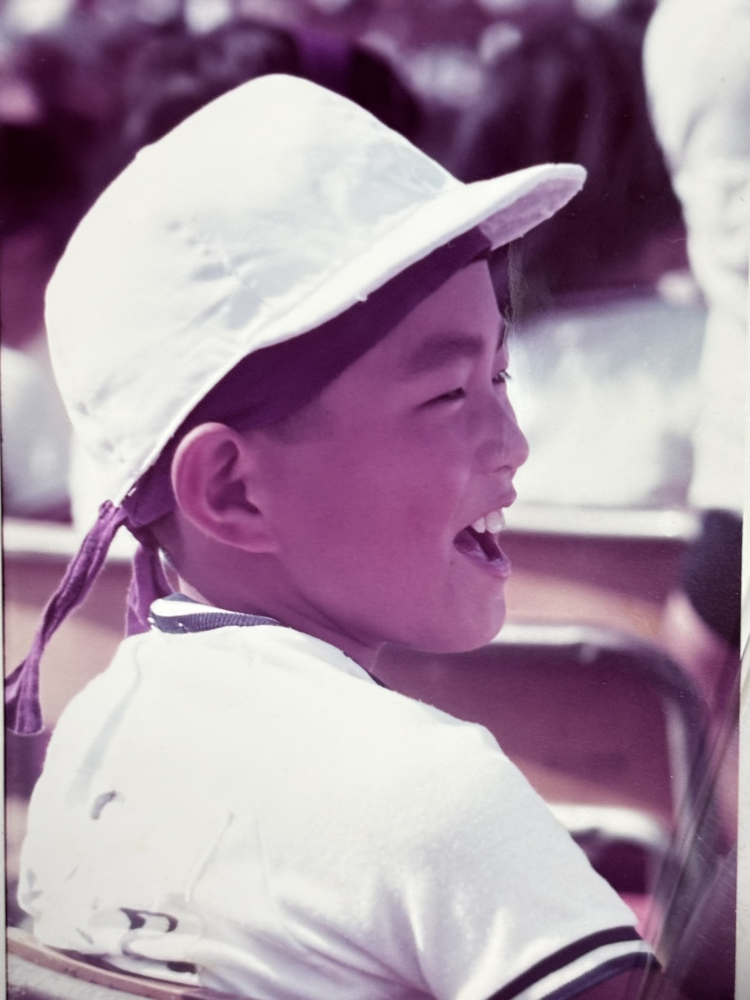
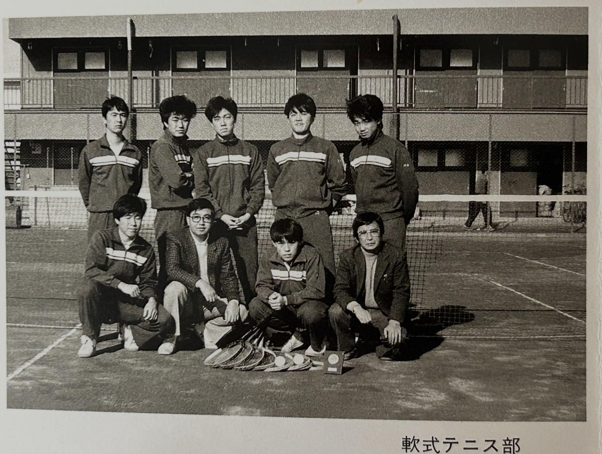
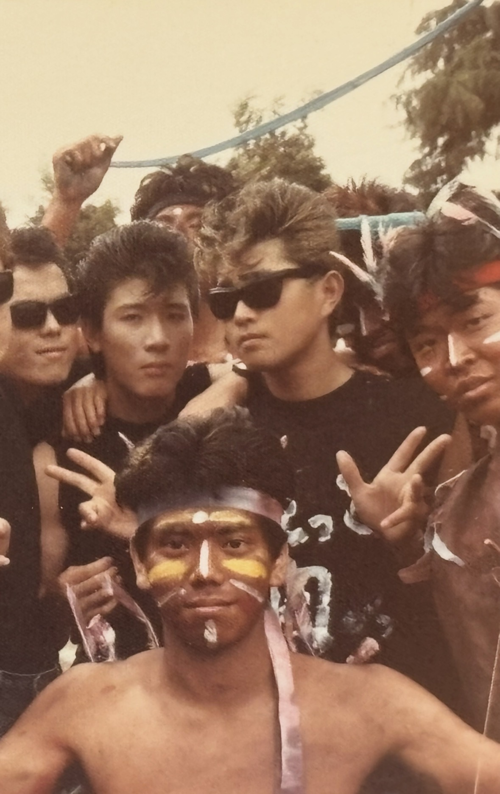
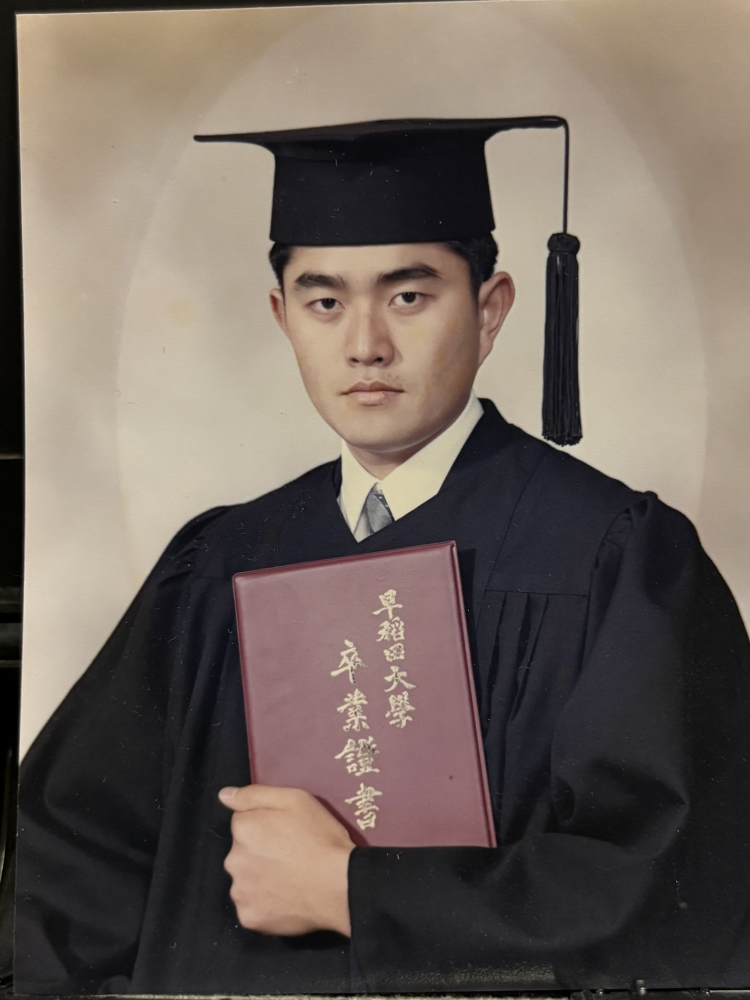
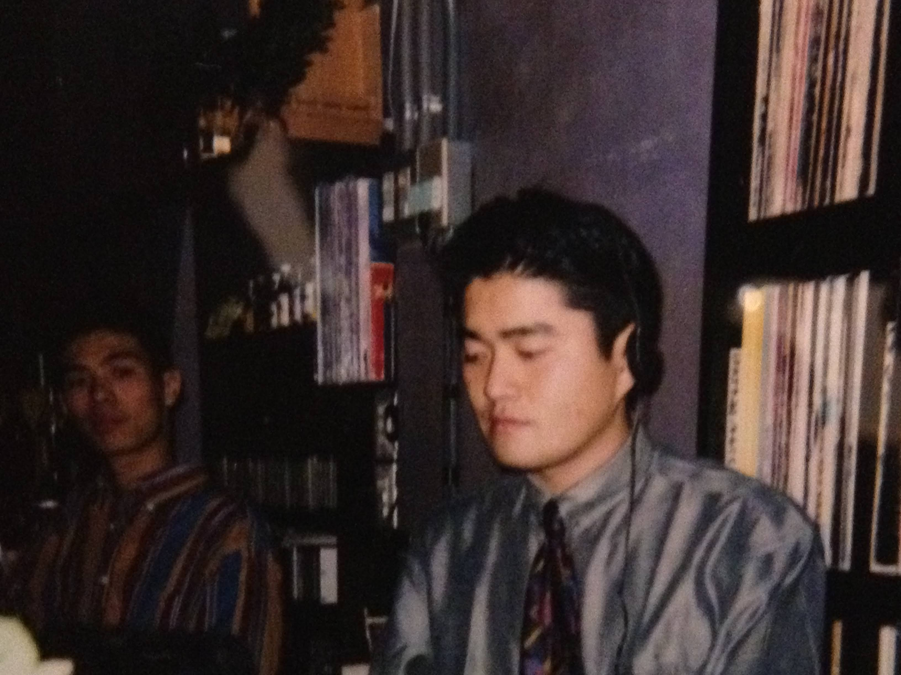

１９６０年代 ～原点～
１９６６年（丙午）８月１９日、群馬県伊勢崎市で父・孝夫と母・太恵の長男として生まれる。
父は６人兄弟の４男（５番目）。農業科学を専攻した国立大理系肌の公務員で、畑づくりや園芸、絵画に写真と、自然や表現好きな趣味人。また、道場通いを日課としていた五段の弓道家でもあり、豊かな感性と凛とした静観が同居する人物。母（旧姓・橋田）は７人兄弟長女（１番目）。高校時代は全日本庭球選手で、書道師範の顔も持つ。家業である縫製工場（元は伊勢崎銘仙の反物卸）を手伝っていた。
どちらの家系も地元に深く根を張り、辿れる限りでも平安時代の東国武士に繋がるようなので、血統書付きの大和朝廷下の騎馬隊グンマー族（笑）。
そんな文武両道の両親の元で、２歳上の姉と共に育った。姉は２３歳で豪州のターンブル家へ嫁ぎ、２人の娘に恵まれ、現在は夫とシドニーで生活を送っている。





核家族化が進んだ現代とは対照的に、両親共に兄弟が多く、地元をはじめ横浜や広島など、ことあるごとに親戚が集まる賑やかなファミリーだった。中でも歳が近かった母方の従兄弟たちとは、広島、東京、伊勢崎とお互いの街を往来して良く遊んだ。その名残で、今でも広島弁はそれなりに話せる（自称ｗ）。





こうした環境の中で、市内の西園保育園、南幼稚園で伸びやかな幼少期を過ごした。


1970年代 ～スポーツ少年から青春時代へ～
伊勢崎市立南小学校時代は、とにかく体を動かすことが好きだった。
野球、水泳、スキー、市内スキークラブ、サッカースポーツ少年団…。左ウイングとして副キャプテンも務めた。
市立第一中学校では当初サッカー部へ入部するつもりだった。しかし、小学校時代の憧れの先輩たちが"ビーバップ"スタイルへ変貌し、スパイクのかかとを踏みつぶしてプレーする姿を見て断念。
母の影響もあり軟式庭球部へ転向。中学3年の中体連では市内3位となり、県大会にも出場した。芸術面では、マンガに始まり絵を描くことが得意で、書道は教室に習いながら初段を取得した。





1980年代 ～高校‐大学、DJ音楽、そして人生の視野が広がる～
高校は県内の男子校（前橋高校）へ進学。しかし自由奔放だった自分には秀才揃いの校風が少々窮屈で、気がつけば自分自身が"ビーバップ化"してしまう。勉強は二の次になったものの、応援部と軟式庭球部で青春を満喫。高校3年では群馬大学杯3位入賞を果たした。
大学への現役進学は叶わず、駿台予備校大宮校で１年間の浪人時代を過ごす。そこから週一でお茶の水本校に通った帰りに、渋谷の「La Scala」でディスコDJパフォーマンスに魅了され、後に人生を通じて続くレコードのDJ編集と収集趣味が始まった。
早稲田大学社会科学部へ合格した際、自宅からの通学を促されたが、独立願望の強さから、一般教養課程の2年間は中野区の風呂なしアパートで１人暮らしを始めた。近くの銭湯へ通い、時には背中いっぱいの刺青を入れた常連客に水がかかって怒鳴られるなど、今では笑い話になる経験も少なくなかった。
大学後半の2年間は、世田谷区東玉川へ移り住んだ。ゼミ（元野村證券の教授による日本経済の実証研究）には一応真面目に出席していたものの、キャンパスライフはアルバイトとサークル活動が中心だった。典型的な「高田馬場に通う学生」の枠にはまらず、日常生活の軸足はすっかり東横線から渋谷&日比谷線の沿線エリアへと移っていた。
長く働いたアークヒルズ全日空ホテルのバイト帰りには、首相官邸裏手（国会議事堂前駅）の「花の華ラーメン」に通い詰めた。あれから40年近くが経つ今も、あの味への思い入れは色褪せない。（※当時の店舗は現在「支那麺 はしご 赤坂店」となったため、今は南麻布店へ月に１回ほど通っている。少し味のニュアンスは違う……）
また、この頃のバイト先にはDJの達人である先輩がいた。やがて先輩の家に入り浸るようになり、DJテクニックを伝授してもらう傍ら、自身のレコード収集熱にも火がついた。









1990年代 ～金融の世界へ、そしてヨーロッパへ～
ここに1990年代の文章が入ります。
2000年代 ～再びロンドンへ～
ここに2000年代の文章が入ります。
2010年代 ～仕事も人生も、大きな転機～
ここに2010年代の文章が入ります。
2020年代 ～そして還暦へ・未来への躍進～
ここに2020年代の文章が入ります。